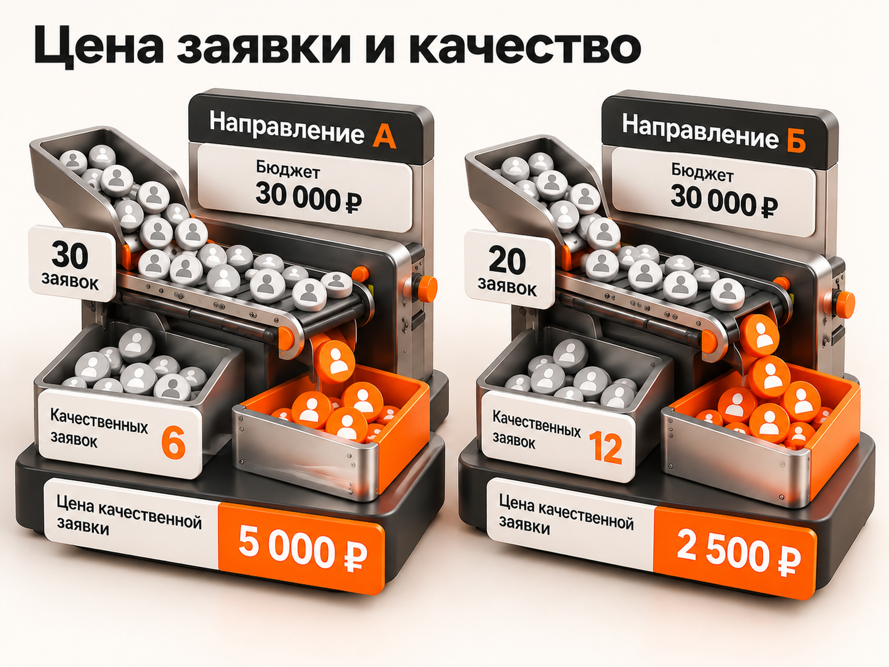

Блог о платном трафике
Ведение Яндекс Директ: что входит в работу специалиста
Ведение Яндекс Директ - это регулярная работа с рекламными кампаниями после их запуска. Специалист контролирует расходы и показы, анализирует поисковые запросы и площадки РСЯ, проверяет конверсии, корректирует стратегии и объявления, оценивает качество заявок и готовит отчёт о результатах.
Главная задача ведения - не постоянно менять настройки, а использовать накопленную статистику для улучшения результатов бизнеса. Хорошее сопровождение рекламы помогает находить неэффективные расходы, сохранять работающие связки и развивать направления, которые приводят клиентов.
В своей работе я анализирую не только рекламный кабинет, но и всю воронку: от перехода по объявлению до заявки и продажи.
Чем ведение отличается от настройки Яндекс Директ
Настройка Яндекс Директ - это подготовка и запуск рекламы. Ведение - последующая регулярная работа с её фактическими результатами.
| Критерий | Настройка | Ведение |
|---|---|---|
| Основная задача | Подготовить и запустить кампании | Улучшать и контролировать действующую рекламу |
| Исходные данные | Анализ спроса, аудитории и гипотезы | Реальные клики, заявки, продажи и расходы |
| Основные действия | Подбор фраз, структура, объявления, цели, стратегии | Анализ запросов, площадок, бюджета, конверсий, тестирование |
| Результат | Запущенные рекламные кампании | Управляемая реклама с измеримыми показателями |
| Продолжительность | Разовая работа или этап запуска | Регулярное сопровождение |
После запуска меняются спрос, конкуренция, стоимость трафика и поведение аудитории. Появляются поисковые запросы, которых не было в первоначальной семантике, а отдельные рекламные связки могут постепенно терять эффективность.
Однако автоматические стратегии Яндекс Директа не требуют постоянного ручного вмешательства. Частые изменения целей и ограничений могут приводить к новому периоду обучения алгоритмов.
Поэтому специалисту необходимо понимать не только что изменить, но и когда лучше сохранить действующие настройки.
Если реклама ещё не запущена, начните с инструкции по настройке Яндекс Директ.
Что входит в ежемесячное ведение Яндекс Директ
Ежемесячное ведение включает контроль работоспособности кампаний, анализ трафика и конверсий, оптимизацию расходов, работу со стратегиями и объявлениями, проверку аналитики и отчётность.
Состав задач зависит от бизнеса, количества кампаний, доступного бюджета и объёма статистики. Не все действия необходимо выполнять каждый день или даже каждый месяц.
Главный принцип: любое изменение должно решать конкретную проблему или проверять обоснованную гипотезу.
Анализ результатов рекламы
Работу начинаю с показателей, которые характеризуют результат для бизнеса.
Для рекламы услуг это количество заявок, их стоимость, качество обращений и продажи. Для интернет-магазина дополнительно анализируются заказы, доход, ДРР и другие показатели экономики.
При анализе важно определить:
- Какие кампании приводят целевые обращения.
- Какие направления расходуют бюджет без результата.
- Где увеличилась стоимость заявки.
- Из каких источников приходят потенциальные покупатели.
- Насколько результаты соответствуют допустимой стоимости привлечения клиента.
Дешёвые клики не означают эффективную рекламу. Иногда более дорогой трафик приносит значительно больше продаж.
Контроль показов, расходов и технических ошибок
Рекламные кампании могут перестать работать не только из-за изменений в аукционе.
Например, закончились деньги на счёте, объявления не прошли модерацию, изменились ограничения стратегии или перестала открываться посадочная страница.
Поэтому при ведении необходимо контролировать:
- Наличие показов и причины возможных остановок.
- Баланс и расход рекламного бюджета.
- Статусы кампаний и объявлений.
- Необычные изменения количества кликов и конверсий.
- Доступность посадочных страниц.
- Корректность ссылок и основных форм заявки.
Часть такого контроля можно автоматизировать с помощью регулярных проверок и уведомлений об отклонениях. Но автоматизация не заменяет анализ причин проблемы.
Работа с поисковыми запросами и автотаргетингом
Ключевая фраза, по которой настроена реклама, и реальный поисковый запрос пользователя могут отличаться.
В отчёте «Поисковые запросы» Яндекс Директа специалист анализирует фактические формулировки, по которым показывались объявления, включая запросы, подобранные автоматическими механизмами.
При ведении необходимо:
- Исключать явно нецелевые запросы.
- Проверять категории автотаргетинга.
- Находить новые коммерческие запросы.
- Анализировать эффективность отдельных направлений семантики.
- Проверять, не ограничивают ли минус-фразы полезный спрос.
Нельзя заранее составить идеальный список минус-фраз, который навсегда исключит весь нецелевой трафик.
При этом добавлять каждую новую фразу в исключения тоже неправильно. Сначала нужно понять её коммерческий смысл и влияние на результат.
Подробнее о работе с исключениями читайте в статье «Минус-фразы в Яндекс Директ».
Контроль площадок РСЯ
В Рекламной сети Яндекса разные площадки могут приводить аудиторию с различным поведением и качеством обращений.
Специалист анализирует статистику площадок, стоимость конверсий и, если есть соответствующие данные, качество поступающих заявок.
Площадка с большим количеством дешёвых кликов не обязательно полезна. Но отсутствие конверсий после небольшого числа переходов также не доказывает её неэффективность.
Поэтому решение об исключении площадки нужно принимать с учётом накопленной статистики, расходов и особенностей конкретной кампании.
Массовое отключение площадок без достаточных оснований может ограничить охват и ухудшить результаты рекламы.
Работа с автоматическими стратегиями
Современное ведение Яндекс Директа во многом связано с управлением автоматическими стратегиями.
Например, для стратегии «Максимум конверсий» необходимо правильно выбрать цель оптимизации и подходящие ограничения по расходу или стоимости результата.
Специалист проверяет:
- Соответствует ли выбранная цель бизнес-задаче.
- Достаточно ли конверсий для обучения.
- Не ограничивает ли установленный бюджет работу кампании.
- Соответствует ли фактическая стоимость результата целевому значению.
- Не произошли ли изменения, после которых стратегия начала работать хуже.
Если кампания получает мало конверсий, иногда полезнее пересмотреть структуру и цели оптимизации, чем постоянно менять целевую стоимость конверсии.
Подробнее об этом в статье «Стратегии Яндекс Директа».
Контроль целей, Метрики и CRM
Для автоматических стратегий качество данных о конверсиях имеет большое значение.
Если в качестве основной цели используется любое нажатие на кнопку, рекламная система может оптимизироваться под пользователей, которые активно нажимают, но не становятся клиентами.
Поэтому необходимо периодически проверять:
- Правильно ли срабатывают цели Яндекс Метрики.
- Учитываются ли реальные отправки форм.
- Передаются ли данные о звонках.
- Нет ли дублирования конверсий.
- Отражаются ли заказы и доход.
- Насколько выбранные цели соответствуют качественным обращениям.
Для бизнеса с длинным циклом сделки полезно связывать рекламу с CRM.
Например, если из десяти обращений только два подходят под требования компании, специалисту важно видеть не просто десять конверсий, а качество этих обращений.
Яндекс Директ поддерживает передачу офлайн-конверсий и данных из CRM. Это позволяет учитывать события, которые происходят уже после отправки заявки.
Подробный разбор есть в статье «Офлайн-конверсии в Яндекс Директ».
Работа с объявлениями и креативами
Объявления можно улучшать по мере накопления статистики.
Специалист проверяет, какие предложения привлекают целевую аудиторию, какие сообщения не соответствуют содержанию посадочной страницы и какие изображения работают лучше.
Для тестирования могут использоваться разные заголовки, преимущества, предложения, изображения и варианты посадочных страниц.
При этом оценивать объявления только по CTR нельзя. Более кликабельный текст не всегда приводит больше качественных заявок.
Перераспределение рекламного бюджета
В одном рекламном аккаунте могут одновременно работать несколько направлений с разной эффективностью.
Например, реклама одной услуги приводит обращения по допустимой стоимости, а другое направление расходует существенную часть бюджета без продаж.
Если оценивать только общий CPA аккаунта, такие различия легко пропустить.
Задача специалиста - анализировать расходы по направлениям, оценивать потенциал роста и перераспределять бюджет с учётом фактической эффективности.
Не всегда стоит полностью отключать слабое направление. Иногда сначала нужно проверить посадочную страницу, предложение или выбранные цели.
Какие показатели нужно контролировать при ведении рекламы
Эффективность ведения Яндекс Директа нужно оценивать по нескольким показателям одновременно.
| Показатель | Что показывает | Для чего нужен |
|---|---|---|
| Расход | Сколько потрачено на рекламу | Контроль бюджета |
| CPL | Стоимость одной заявки | Оценка расходов на обращения |
| CR | Долю посетителей, совершивших целевое действие | Анализ конверсии |
| Качественные лиды | Сколько обращений соответствуют требованиям бизнеса | Оценка качества трафика |
| CAC | Стоимость привлечения клиента | Проверка экономики продаж |
| ДРР | Долю рекламных расходов в доходе | Оценка эффективности продаж |
| CTR и CPC | Кликабельность и стоимость перехода | Диагностика трафика |
Главная ошибка при оценке рекламы - ориентироваться на один показатель без учёта остальных.
Пример: почему дешёвые заявки могут быть невыгодными
Предположим, два рекламных направления за одинаковый период потратили по 30 000 ₽.
| Показатель | Направление А | Направление Б |
|---|---|---|
| Рекламный расход | 30 000 ₽ | 30 000 ₽ |
| Всего заявок | 30 | 20 |
| CPL | 1000 ₽ | 1500 ₽ |
| Качественных заявок | 6 | 12 |
| Стоимость качественной заявки | 5000 ₽ | 2500 ₽ |
Это условный расчёт для объяснения методики, а не результаты реальной рекламной кампании.
На первый взгляд направление А работает лучше, потому что заявки в нём дешевле.
Но после квалификации оказывается, что направление Б приводит вдвое больше подходящих обращений при таком же бюджете.

Поэтому снижение CPL не всегда означает повышение эффективности рекламы. Стоимость качественного обращения и дальнейшие продажи могут быть важнее стоимости любой заявки.
Для более глубокой оценки необходимо учитывать конверсию качественного лида в продажу и прибыль от привлечённого клиента.
Подробности расчётов приведены в статье о стоимости конверсии в Яндекс Директ.
Как часто нужно оптимизировать Яндекс Директ
Контролировать рекламу желательно регулярно, но менять настройки каждый день не требуется.
Частота оптимизации зависит от рекламного бюджета, объёма конверсий, стабильности кампаний и особенностей бизнеса.
Пример рабочего регламента:
| Периодичность | Что проверяется |
|---|---|
| Ежедневно или автоматическими уведомлениями | Показы, расходы, баланс, доступность сайта, критичные отклонения |
| Раз в несколько дней или еженедельно | Поисковые запросы, площадки РСЯ, конверсии, состояние стратегий |
| По мере накопления статистики | Эффективность объявлений, тесты гипотез, перераспределение бюджета |
| Ежемесячно | Общие результаты, качество обращений, выполненные работы и план следующего периода |
Это ориентировочный регламент, а не обязательный стандарт для каждого аккаунта.
В небольших проектах статистики может быть недостаточно даже за неделю. В крупных аккаунтах некоторые проверки требуются значительно чаще.
Отдельного внимания требуют автоматические стратегии. Частая смена целей, ограничений и других важных настроек может мешать алгоритмам обучаться.
Хорошее ведение означает постоянный контроль, а не постоянное вмешательство.
Если рекламная кампания работает стабильно и приносит результат по приемлемой стоимости, отсутствие изменений в конкретный день не является недостатком работы специалиста.
Что должно быть в ежемесячном отчёте по Яндекс Директ
Хороший отчёт по ведению рекламы должен показывать не только статистику, но и выводы специалиста.
Заказчику необходимо понимать, что произошло с рекламой, почему изменились показатели и какие действия планируются дальше.
Я считаю полезным включать в отчёт пять основных частей.
- Результаты периода. Расход, количество заявок, CPL, качественные обращения и продажи, если доступны данные.
- Сравнение с предыдущим периодом. Какие показатели выросли, снизились или остались стабильными.
- Выполненные работы. Какие запросы, объявления, стратегии и направления были изменены.
- Выявленные проблемы. Что ограничивает результат: трафик, сайт, аналитика, бюджет или качество обработки заявок.
- План следующего периода. Какие гипотезы будут проверяться и какие показатели используются для оценки.
Важна связь между действиями и результатами.
Например, фраза «проведена оптимизация рекламных кампаний» практически ничего не объясняет.
Значительно полезнее указать, какое направление потребовало изменений, почему было принято решение и как специалист будет оценивать его последствия.
При этом нельзя приписывать любое улучшение исключительно последнему изменению. На результаты одновременно влияют конкуренция, спрос, сезонность и другие факторы.
Нужно ли полностью переделывать кампании при начале ведения
Полностью пересоздавать рекламные кампании при смене специалиста необязательно.
Если существующая реклама работает, сначала нужно провести аудит и определить конкретные проблемы.
Иногда достаточно изменить цели оптимизации, скорректировать стратегии, исключить нецелевые запросы, перераспределить бюджет или обновить объявления.
Полная пересборка может потребоваться, когда структура кампаний мешает управлению рекламой, цели настроены неправильно или большая часть действующих решений не соответствует задачам бизнеса.
Однако пересоздание кампаний ради самого факта новой настройки не приносит пользы.
Если кампания уже накопила данные и стабильно даёт результат, лучше сохранить её сильные стороны.
Что именно нужно проверить перед началом работы, описано в статье «Аудит Яндекс Директ».
Почему при постоянном ведении заявки не обязательно дешевеют
Ведение Яндекс Директа не гарантирует ежемесячного снижения стоимости заявки.
Цена привлечения зависит от конкуренции, спроса, сезонности, рекламных ограничений, конверсии сайта и качества предложения.
Кроме того, при масштабировании бизнеса приходится привлекать дополнительную аудиторию. Она не всегда конвертируется так же хорошо, как первоначальный наиболее заинтересованный сегмент.
Возможна ситуация, когда CPL растёт, но качество обращений становится выше и продажи увеличиваются.
Поэтому правильнее оценивать динамику не только CPL, но и стоимости привлечения клиента, выручки и прибыльности рекламы.
Главная задача специалиста - не добиться минимальной цены заявки любой ценой, а находить экономически эффективные способы привлечения клиентов.
Когда проблема находится не в рекламе, а в сайте или продажах
Даже правильно настроенная реклама может приводить мало клиентов, если есть проблемы на других этапах воронки.
Например, пользователь переходит по целевому запросу, но не оставляет обращение из-за непонятного предложения, неудобной формы или отсутствия информации о стоимости услуги.
Бывает и обратная ситуация: сайт получает достаточно заявок, но значительная часть обращений не обрабатывается вовремя.
Поэтому при ведении нужно отличать несколько причин слабого результата.
| Ситуация | Что нужно проверить |
|---|---|
| Есть клики, но почти нет заявок | Соответствие трафика, оффер, сайт, формы |
| Есть заявки, но они нецелевые | Поисковые запросы, аудитории, обещания в объявлениях |
| Есть качественные заявки, но мало продаж | Скорость обработки, CRM, работу отдела продаж |
| Расходы растут без увеличения результата | Стратегии, конкуренцию, бюджетные ограничения, эффективность направлений |
Задача директолога не обязательно заключается в самостоятельной переделке сайта или управлении отделом продаж.
Но специалист должен уметь находить проблемы, объяснять их влияние на рекламу и предлагать решения.
Именно поэтому я рассматриваю рекламу, посадочную страницу и обработку обращений как части одной системы привлечения клиентов.
Что обычно не входит в стандартное ведение Яндекс Директ
Состав ежемесячных работ необходимо согласовать заранее.
Обычно регулярное ведение включает аналитику, оптимизацию действующих кампаний, контроль расходов, работу с запросами, объявлениями и отчётность.
А вот разработка нового сайта, полная настройка CRM, создание сложной сквозной аналитики, масштабная переработка посадочных страниц и производство большого объёма контента могут потребовать отдельной оценки.
Это не означает, что такие работы не нужны. Просто их объём и стоимость отличаются от регулярного управления рекламой.
До начала сотрудничества важно определить, кто отвечает за рекламный кабинет, аналитику, сайт, CRM, рекламные материалы и обработку заявок.
Сколько стоит ведение Яндекс Директ
Стоимость ведения складывается из оплаты работы специалиста и отдельного рекламного бюджета.
Рекламный бюджет расходуется непосредственно на размещение объявлений, а оплата ведения покрывает управление кампаниями, аналитику, оптимизацию и отчётность.
Мои услуги по настройке и ведению Яндекс Директа начинаются от 30 000 ₽ в месяц. Итоговая стоимость зависит от количества направлений, объёма кампаний и сложности аналитики.
Проект с одной услугой в одном регионе требует другого объёма работы, чем крупный интернет-магазин или B2B-компания с несколькими продуктами и длинным циклом сделки.
Перед выбором исполнителя нужно сравнивать не только цену, но и состав работ, глубину аналитики и формат взаимодействия.
Подробный разбор стоимости вынесен в отдельную статью «Ведение Яндекс Директ: цена и что входит в стоимость».
Как оценить качество работы специалиста по Яндекс Директ
Оценивать директолога лучше по качеству принятых решений и результатам бизнеса, а не по количеству внесённых изменений.
Я бы обратил внимание на четыре критерия.
1. Специалист понимает экономику бизнеса.
Он интересуется не только кликами и заявками, но и качеством обращений, конверсией в продажу и допустимой стоимостью привлечения клиента.
2. Обеспечена прозрачность рекламы.
Заказчик имеет согласованный доступ к статистике, понимает размер расходов и может проверить результаты кампаний.
3. Решения можно объяснить.
Если специалист меняет стратегию, отключает площадку или перераспределяет бюджет, у такого действия должна быть понятная причина.
4. Есть регулярные выводы и план дальнейшей работы.
Отчёт должен показывать, какие проблемы обнаружены, какие действия выполнены и что планируется проверять дальше.
Не стоит оценивать специалиста исключительно по обещанию постоянно снижать стоимость заявки.
Гораздо важнее понимать, насколько эффективно реклама помогает бизнесу привлекать клиентов и какие решения принимаются для улучшения результатов.
Как я работаю с ведением Яндекс Директ
Я веду рекламные проекты лично, без передачи коммуникации отдельному аккаунт-менеджеру.
При начале работы изучаю бизнес, предложение, посадочную страницу, существующие кампании и аналитику. Если реклама уже запущена, сначала определяю её сильные и слабые стороны.
Дальше работа строится на регулярном анализе расходов, обращений и качества трафика. По мере накопления статистики принимаю решения об изменении кампаний, тестировании гипотез и развитии работающих направлений.
Работаю как ИП, по договору, с ЭДО и закрывающими документами.
Примеры проектов и результатов можно посмотреть в моих кейсах.
Что в итоге даёт ведение Яндекс Директ
Ведение Яндекс Директ нужно для того, чтобы реклама оставалась управляемым инструментом привлечения клиентов, а не просто источником оплаченных кликов.
Специалист должен контролировать бюджет, анализировать качество трафика, следить за конверсиями, исправлять ошибки и находить возможности для улучшения результатов.
Настройка позволяет запустить рекламные кампании. Ведение помогает использовать накопленные данные для принятия решений и дальнейшего развития рекламы.
Если вам требуется сопровождение действующего рекламного аккаунта, можно обсудить ведение Яндекс Директ. Для первоначальной оценки достаточно указать сайт, рекламируемые услуги, географию и примерный месячный бюджет.